1016C11 SINGLE CYLINDER HEAD-R R GASKET FOR VERSIONS WITH AIR CONDITIONER
- Path
- Procedures > 10 ENGINE UNIT > 1016 CYLINDER HEAD/S > 1016C CYLINDER HEAD - REMOVE + RE-FIT > 1016C11 SINGLE CYLINDER HEAD-R R GASKET FOR VERSIONS WITH AIR CONDITIONER
- Kind
- repair procedure (removal / refitting; the operation number is the code)
- Applies to
- all engines; all production periods
- Interactive page
- https://sloeber94.github.io/elrnDB-fPnd/en/#/2752419
Applies to: engines: 1.1; all production periods
 Removing
Removing
 Refitting
Refitting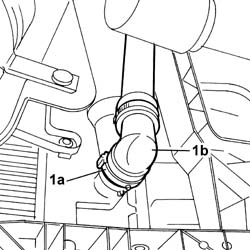
Applies to: engines: 1.1; all production periods
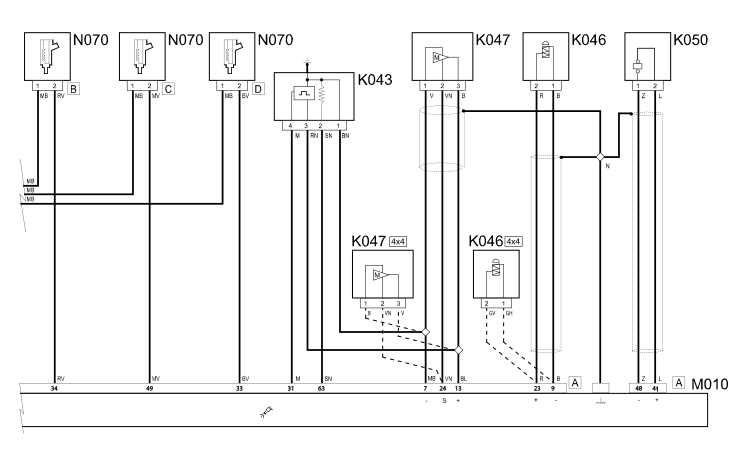
Applies to: engines: 1.1; all production periods
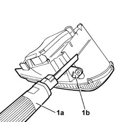
Applies to: engines: 1.1; all production periods

Applies to: engines: 1.1; all production periods
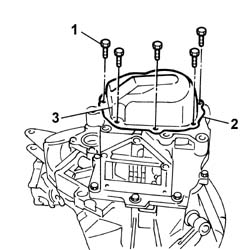
Applies to: engines: 1.1; all production periods
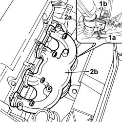
Applies to: engines: 1.1; all production periods
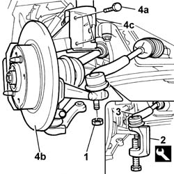
Applies to: engines: 1.1; all production periods
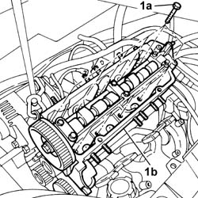
Applies to: engines: 1.1; all production periods
Refitting
Removing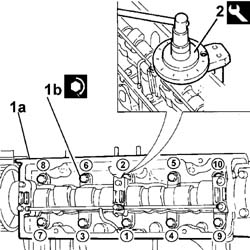
Applies to: engines: 1.2 8v; all production periods
Removing
RefittingOp. 1048A10 AIR CLEANER FILTERING ELEMENT - REPLACE
Op. 7055B54 UNDER-ENGINE GUARD - R R
Op. 5530B56 BATTERY DRIP TRAY COVER - R.R.
Op. 5530B52 BATTERY DRIP TRAY/SUPPORT - R.R.
Position a suitable container for collecting the coolant.
1. Working on the fastening clip (1a) disconnect the lower radiator hose (1b) and drain the system.
Applies to: engines: 1.2 8v; all production periods
1. Disconnect the electrical connections for the ignition coils (1a) and the electrical connections for the spark plugs (1b).
Description | Connector | |
|---|---|---|
1a | Ignition coil | A30A |
Description | Connector | |
|---|---|---|
1a | Ignition coil | A30B |
2. Undo the fixing nuts (2a) and the bolt (2b) and remove the ignition coil assembly (2c) complete with support.
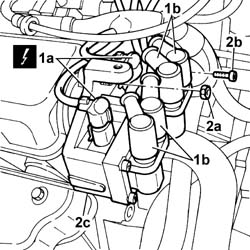
Applies to: engines: 1.2 8v; all production periods
1. Open the retaining band (1a) and release the coolant pipe (1b) from the thermostat.
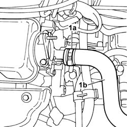
Applies to: engines: 1.2 8v; all production periods
1. Working from the throttle casing control (1a), disconnect the accelerator control cable (1b).
Remove the cable from the mounting bracket.
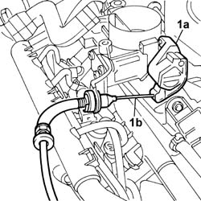
Applies to: engines: 1.2 8v; all production periods
Op. 1056B50 COOLANT TEMPERATURE SENSOR - R + R
Op. 5510C30 ENGINE TIMING SENSOR - R+R
Op. 1080D22 OIL VAPOUR PIPE FROM CAM COVER TO INTAKE R R
1. Disconnect the rapid connector for the fuel vapour recovery pipe.
2. Disconnect the fuel supply pipe rapid connector.
3. Open the fastening band (3a) and disconnect the single-acting valve pipe (3b).
4. Disconnect the electrical connection for the built-in air temperature sensor.
Description | Connector | |
|---|---|---|
4 | Integrated air temperature sensor | K43 |
5. Disconnect the electrical connection for the fuel vapour recovery solenoid valve.
Description | Connector | |
|---|---|---|
5 | Fuel vapour recovery solenoid valve | L10 |
6. Disconnect the electrical connection for the throttle position sensor.
Description | Connector | |
|---|---|---|
6 | Throttle position sensor | K56 |
7. Disconnect the electrical connection for the engine idle actuator.
Description | Connector | |
|---|---|---|
7 | Idle actuator | N74 |
8. Disconnect the electrical connections for the injectors.
Description | Connector | |
|---|---|---|
8 | Injector | N70A |
Description | Connector | |
|---|---|---|
8 | Injector | N70B |
Description | Connector | |
|---|---|---|
8 | Injector | N70C |
Description | Connector | |
|---|---|---|
8 | Injector | N70D |
Move the electrical wiring aside releasing the cable duct from the fastenings on the tappet cover.
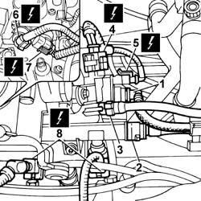
Applies to: engines: 1.2 8v; all production periods
Op. 5040A20 AIR CONDITIONER COMPRESSOR - R+R - INCLUDES FLUID LEVEL CHECK AND TOP UP IF NECESSARY
Op. 5530A14 ALTERNATOR - R+R FOR VERSIONS WITH AIR CONDITIONER
Op. 5040A26 COMPRESSOR MOUNT - R R
1. Undo the fixing nuts (1a) and remove the intake manifold (1b) complete with throttle body and single fuel manifold pipe.
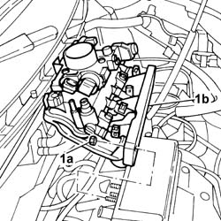
Applies to: engines: 1.2 8v; all production periods
Position a suitable container for collecting the engine oil.
Unscrew the engine oil sump plug and drain the lubrication system.
Op. 1072C44 EXHAUST MANIFOLD HEAT SHIELD ON BULKHEAD - R+R
1. Undo the fixing bolt (1a) and release the bracket (1b).
2. Undo the fixing nuts (2a) and release the exhaust manifold (2b) from the cylinder head studs.
Applies to: engines: 1.2 8v; all production periods
Remove the engine oil filler cap.
1. Undo the fixing bolts (1a) and remove the tappet cover (1b).
Remove the underlying gasket.
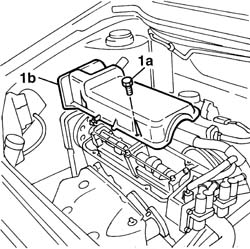
Applies to: engines: 1.2 8v; all production periods
Op. 4450B04 RIGHT FRONT WHEEL R R
Op. 1092B40 AIR CONDITIONER COMPRESSOR/ALTERNATOR DRIVE BELT - R + R
Op. 1092A12 CRANKSHAFT PULLEY - R+R FOR VERSIONS WITH AIR CONDITIONER
Op. 1032D12 TIMING SYSTEM PROTECTIVE COVER(S) - R + R
Op. 7055A42 FRONT GRILLE - R+R
1. Undo the fixing bolts (1a) and remove the single cylinder head (1b).
Remove the underlying gasket.
Applies to: engines: 1.2 8v; all production periods
Refitting
RemovingClean the contact surfaces between the cylinder head and engine block.
Position the cylinder head gasket with the wording "ALTO" [TOP] facing the operator.
Because the gasket is made out of special material, it undergoes a polymerisation process during engine operation and hardens considerably during usage.
In order for the polymerization process to take place the gasket must be kept in its sealed nylon container and only taken out just before fitting to prevent getting oil on it.
1. Position the cylinder head (1a) and tighten the fixing bolts (1b) to a pre-torque of 2 daNm and then to torque following the order and the figures given.
Fastening | Component | Ø | Value (daNm) | |
|---|---|---|---|---|
1b | Bolt | CYLINDER HEAD | M9 x 1.25 | 3 + 90° + 90° |
2. Always following the same tightening order, complete the angular tightening of the bolts using a suitable tool.
Description | Code | |
|---|---|---|
2 | Torque wrench | 1.860.942.000 |
Applies to: engines: 1.2 8v; all production periods
Op. 7055A42 FRONT GRILLE - R+R
Op. 1032D12 TIMING SYSTEM PROTECTIVE COVER(S) - R + R
Op. 1092A12 CRANKSHAFT PULLEY - R+R FOR VERSIONS WITH AIR CONDITIONER
Op. 1092B40 AIR CONDITIONER COMPRESSOR/ALTERNATOR DRIVE BELT - R + R
Op. 4450B04 RIGHT FRONT WHEEL R R
Fit the new gasket.
Position the tappet cover and secure it using the fixing bolts.
Fastening | Component | Ø | Value (daNm) | |
|---|---|---|---|---|
- | Bolt | CAM COVER | M6 X 1 | 1 |
Fit the oil filler plug.
Fit the exhaust manifold in place and tighten the fixing nut to the torque indicated.
Fastening | Component | Ø | Value (daNm) | |
|---|---|---|---|---|
- | Nut | EXHAUST MANIFOLD/S | M8 X 1.25 | 2.5 |
Op. 1072C44 EXHAUST MANIFOLD HEAT SHIELD ON BULKHEAD - R+R
Tighten the bolt fixing the exhaust manifold retaining bracket to torque.
Fastening | Component | Ø | Value (daNm) | |
|---|---|---|---|---|
- | Bolt | EXHAUST MANIFOLD/S | M8 | (Fastening bracket) 2.5 |
Fit the intake manifold in place complete with throttle casing and single fuel manifold pipe and tighten the fixing nuts to the torque indicated.
Fastening | Component | Ø | Value (daNm) | |
|---|---|---|---|---|
- | Nut | INLET MANIFOLD | M8 X 1.25 | 2.7 |
Op. 5040A26 COMPRESSOR MOUNT - R R
Op. 5530A14 ALTERNATOR - R+R FOR VERSIONS WITH AIR CONDITIONER
Op. 5040A20 AIR CONDITIONER COMPRESSOR - R+R - INCLUDES FLUID LEVEL CHECK AND TOP UP IF NECESSARY
Refit the electrical wiring duct in the slots in the tappet cover.
Connect the electrical connections for the injectors.
Description | Connector | |
|---|---|---|
- | Injector | N70A |
Description | Connector | |
|---|---|---|
- | Injector | N70B |
Description | Connector | |
|---|---|---|
- | Injector | N70C |
Description | Connector | |
|---|---|---|
- | Injector | N70D |
Connect the electrical connection for the engine idle actuator.
Description | Connector | |
|---|---|---|
- | Idle actuator | N74 |
Connect the electrical connection for the throttle position sensor.
Description | Connector | |
|---|---|---|
- | Throttle position sensor | K56 |
Connect the electrical connection for the fuel vapour recovery solenoid valve.
Description | Connector | |
|---|---|---|
- | Fuel vapour recovery solenoid valve | L10 |
Connect the electrical connection for the built-in air temperature sensor.
Description | Connector | |
|---|---|---|
- | Integrated air temperature sensor | K43 |
Connect the rapid connector for the fuel vapour recovery pipe.
Connect the fuel supply pipe rapid connector.
Connect the single-acting valve pipe and renew the retaining band.
Op. 1080D22 OIL VAPOUR PIPE FROM CAM COVER TO INTAKE R R
Op. 5510C30 ENGINE TIMING SENSOR - R+R
Op. 1056B50 COOLANT TEMPERATURE SENSOR - R + R
Position the accelerator pedal control cable and fit the end on the throttle valve control.
Fit the coolant hose on the thermostat and renew the fastening band.
Fit the ignition coil assembly and tighten the fixing nuts and bolts.
Connect the electrical connections for the ignition coils and the electrical connections for the spark plugs.
Description | Connector | |
|---|---|---|
- | Ignition coil | A30A |
Description | Connector | |
|---|---|---|
- | Ignition coil | A30B |
Op. 5530B52 BATTERY DRIP TRAY/SUPPORT - R.R.
Op. 5530B56 BATTERY DRIP TRAY COVER - R.R.
Op. 7055B54 UNDER-ENGINE GUARD - R R
Op. 1048A10 AIR CLEANER FILTERING ELEMENT - REPLACE
Op. 0010T20 COOLANT CHECK DENSITY AND TOP UP IF NECESSARY
Op. 0010T11 ENGINE OIL CHECK LEVEL AND TOP UP
Op. 0010T84 COOLANT FOR AIR CONDITIONING SYSTEM DEHYDRATE AND RECHARGE
Applies to: engines: 1.3 JTD 16v; all production periods
Removing
Refitting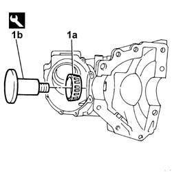
Applies to: engines: 1.3 JTD 16v; all production periods
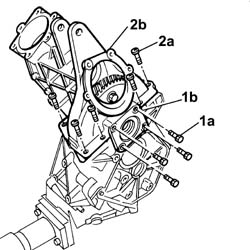
Applies to: engines: 1.3 JTD 16v; all production periods
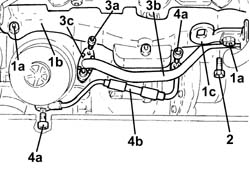
Applies to: engines: 1.3 JTD 16v; all production periods

Applies to: engines: 1.3 JTD 16v; all production periods
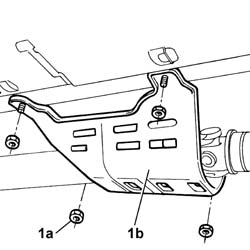
Applies to: engines: 1.3 JTD 16v; all production periods
Applies to: engines: 1.3 JTD 16v; all production periods

Applies to: engines: 1.3 JTD 16v; all production periods
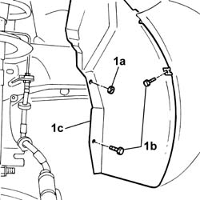
Applies to: engines: 1.3 JTD 16v; all production periods
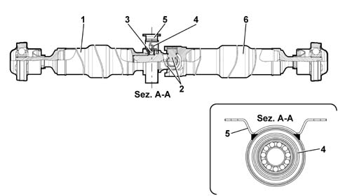
Applies to: engines: 1.3 JTD 16v; all production periods
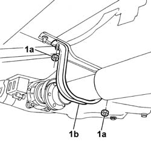
Applies to: engines: 1.3 JTD 16v; all production periods

Applies to: engines: 1.3 JTD 16v; all production periods
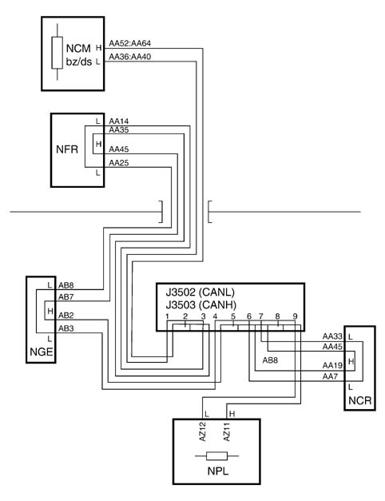
Applies to: engines: 1.3 JTD 16v; all production periods
Refitting
Removing
Applies to: engines: 1.3 JTD 16v; all production periods
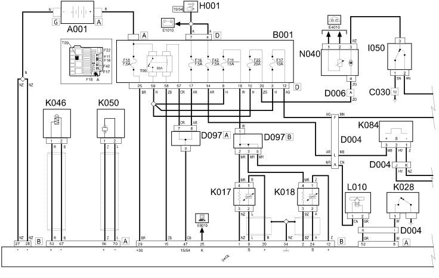
Applies to: engines: 1.3 JTD 16v; all production periods
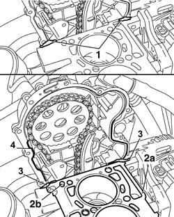
Applies to: engines: 1.3 JTD 16v; all production periods
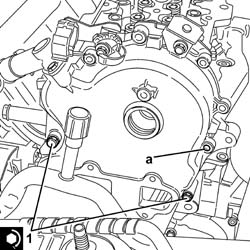
Applies to: engines: 1.3 JTD 16v; all production periods
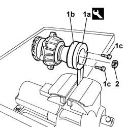
Applies to: engines: 1.3 JTD 16v; all production periods
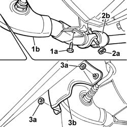
Applies to: engines: 1.3 JTD 16v; all production periods
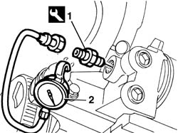
Applies to: engines: 1.3 JTD 16v; all production periods
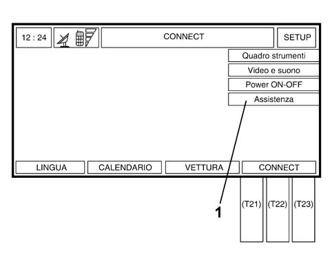
Applies to: engines: 1.3 JTD 16v; all production periods
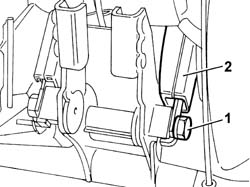
Topics linked from this page (22)
- 0010T11 engine oil check level and top up
- 0010T20 coolant change
- 0010T84 coolant for air conditioning system dehydrate and recharge
- 1032B14 toothed timing belt - r + r for timing adjustment or replacement versions with air conditioner
- 1032D12 timing system protective cover(s) - r + r
- 1048A10 air cleaner filtering element - replace
- 1056B50 coolant temperature sensor - r + r
- 1072C44 exhaust manifold heat shield on bulkhead - r+r
- 1080D22 oil vapour pipe from cam cover to intake r r
- 1092A12 crankshaft pulley - r+r for versions with air conditioner
- 1092B40 air conditioner compressor/alternator drive belt - r + r
- 4450B04 right front wheel r r
- 5040A20 air conditioner compressor - r+r - includes fluid level check and top up if necessary
- 5040A26 compressor mount - r r
- 5510C26 rpm sensor - r+r
- 5510C30 engine timing sensor - r+r
- 5530A14 alternator - r+r for versions with air conditioner
- 5530B10 battery - r+r
- 5530B52 Battery DRIP TRAY/SUPPORT - R.R.
- 5530B56 BATTERY DRIP TRAY COVER - R.R.
- 7055A42 FRONT GRILLE - R+R
- 7055B54 UNDER-ENGINE GUARD - R R